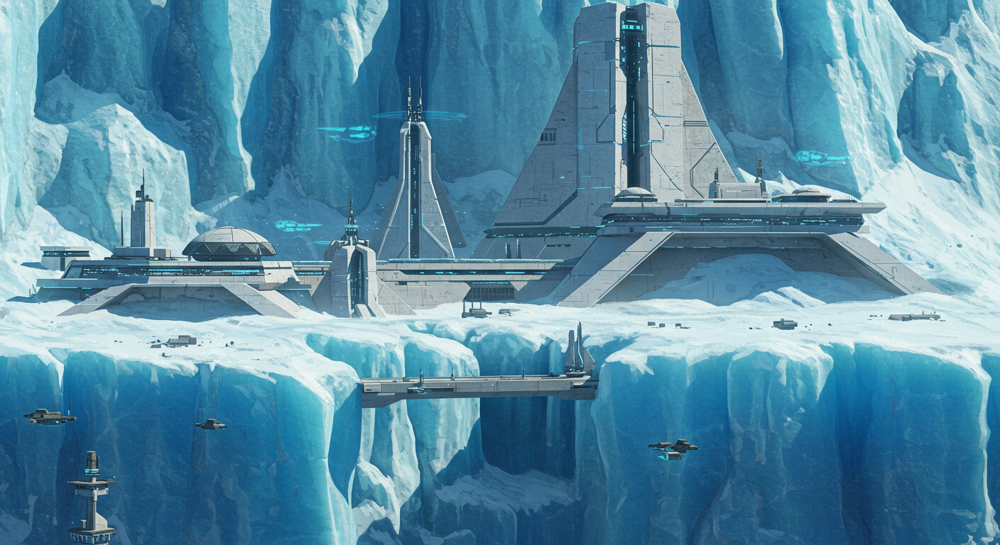
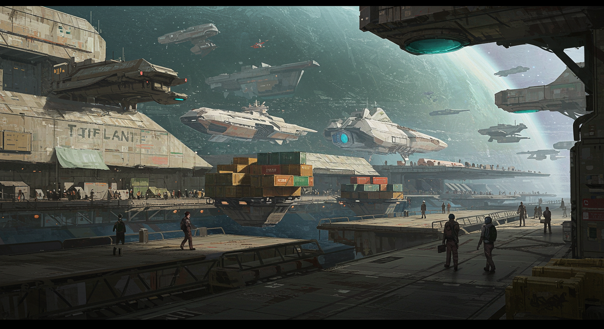
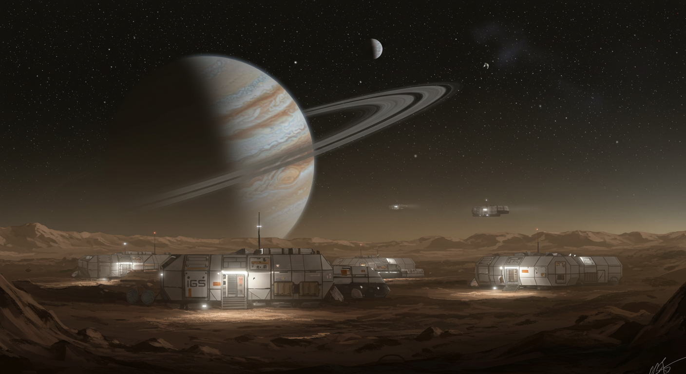
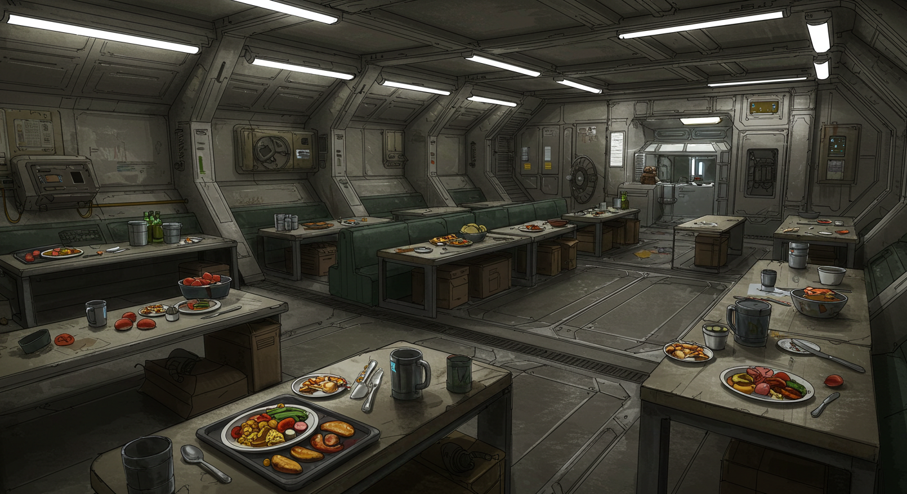
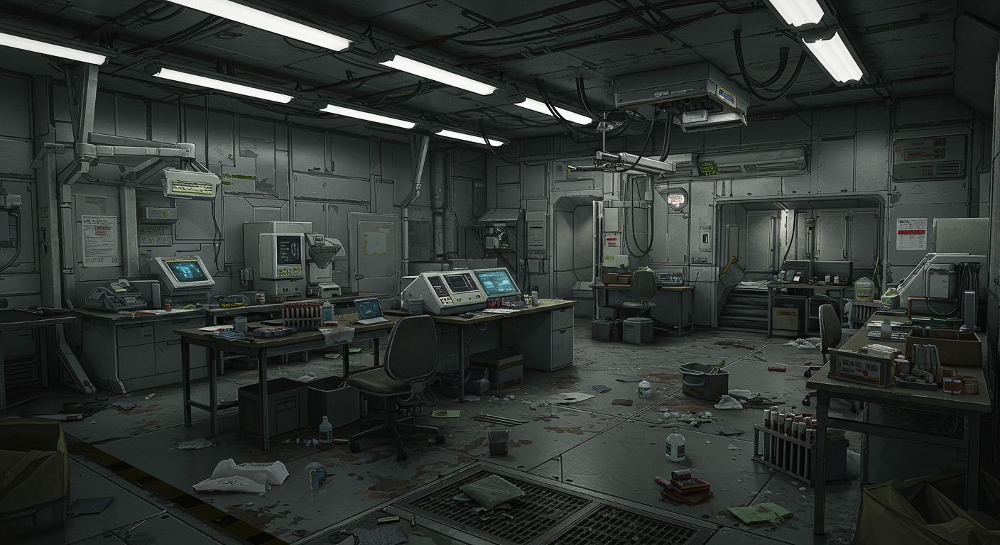
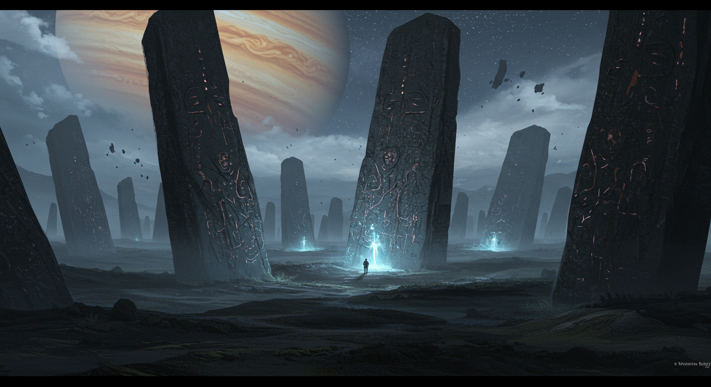

Filters
Sector
Sub-sector
System
Type
Faction
Mission
Nielkladlief
Nielkladlief is a high-population world with over a billion sophonts, serving as the sector capital of the Zhodani Consulate's Colonnade Province. As the administrative center for 88 Colonnade systems, it enjoys considerable trade and prestige. The world is part of the Dlieblafia Subsector in the Vanguard Reaches Sector.
World Characteristics
- Climate: Southern hemisphere is more moderate than the north
- Year Length: 610 standard days
- Seasonal Cycle: Summer coincides with furthest separation from the two stars
- Military Presence: Naval Base present, supporting military starships
Starport Facilities
The Class A Starport offers comprehensive facilities including:
- Refined fuel for starships
- Brokerage services for passengers and cargo
- Ship provisions and supplies
- Shipyard capable of:
- Annual maintenance
- Overhauls and repairs
- Construction of starships and non-starships
- Both Highport and Downport facilities
Political Significance
- Capital Status: Sector capital of Colonnade Province
- Administrative Role: Manages 88 Colonnade systems
- Historical Note: Has served as the capital since 996
- Political Structure: District Seat of the Colonnade Province
The Colonnade University
The Colonnade University stands as one of the most prestigious institutions of higher learning in the Vanguard Reaches. Founded in 1023, it has grown to become a center of academic excellence and cultural exchange, attracting students and scholars from across the sector.
- Academic Programs: Offers comprehensive studies in sciences, humanities, and technical fields
- Research Facilities: State-of-the-art laboratories and research centers
- Cultural Exchange: Hosts regular symposiums and conferences with representatives from various worlds
- Notable Alumni: Many graduates have gone on to serve in prominent positions within the Zhodani Consulate
Drenalch
Drenalch is a rich, agricultural world with improving living conditions due to a bustling agro-economy. As the homeworld of the Ghenani (a Minor Human Race), it is a Non-Aligned world located in the Yavakrbi Subsector of Vanguard Reaches Sector. The world offers high-grade living conditions, a good climate, and a non-harmful environment, making immigration registration highly sought after.
World Characteristics
- Size: Big World (15,200km - 16,800km diameter)
- Gravity: 1.1G - 1.5G
- Atmosphere: Dense (1.50 - 2.49 atm)
- Hydrosphere: 75-85% water coverage
Geography & Climate
Land is concentrated in a globe-spanning equatorial supercontinent. The habitable area is limited to Gureana, a protected semi-circular gulf over 2,000 kilometres across, which appears to be a basin excavated by an intentional asteroid impact during the Ancients' terraforming effort. Rugged mountains, interior deserts, and devastating coastal storms characterize the planet's surface.
Technology & Infrastructure
- Communication: Telephone, radio, and television
- Power Generation: Electricity, hydrocarbon internal combustion, basic atomic energy
- Transportation:
- Land: Ground cars, automobiles, tracked vehicles
- Water: Large ships and submersibles with steel hulls
- Air: Early aircraft, seaplanes, early unmanned rockets
Government & Law
Drenalch is governed by an Impersonal Bureaucracy, where government leadership serves as figureheads while the bureaucracy dictates policy and execution. The world maintains a moderate law level, with comprehensive regulations covering government and social interaction. Firearms and destructive weapons are regulated or prohibited.
Historical Timeline
- -300,000: Ghenani transplanted by the Ancients
- -5000: Agricultural redevelopment begins
- -3000: Starship crash spurs technological advancement
- -2300: Discovery of gunpowder
- -1100: First contact with Zhodani explorers
- -150: Formation of unified secular government
- 695: Improved relations with Zhodani established
Whisper Point
Whisper Point is a remote coordinate in deep space, approximately one parsec from Drenalch. This unassuming location has gained significance as both a strategic refueling point and a clandestine meeting ground for illicit activities.
Legitimate Use
Originally established as a deep-space refueling point for the Colonnade University research mission to Drenalch, Whisper Point was intended to support vessels making the long journey to the remote world. The Ambassador facilitated the setup of a supply dump here, providing crucial support for scientific expeditions.
The Anomaly
During a routine refueling stop, the party discovered a mysterious spatial anomaly at Whisper Point. The phenomenon was carefully documented, with the crew gathering valuable scientific data that could prove significant for future research or potential commercial applications.
Illicit Activities
What began as a legitimate refueling point has since been revealed as a regular rendezvous location for clandestine operations. The Void Vultures Pirates, in coordination with the Ambassador's compromised Intendant, Lyraviepr, used this remote location for the transfer of sensitive materials and information. The isolation of Whisper Point made it an ideal location for these covert exchanges, far from the prying eyes of official starports and security forces.
Strategic Significance
- Location: Positioned at a strategic distance from Drenalch, making it accessible yet discreet
- Anomaly: The presence of the spatial anomaly may have been a factor in its selection as a meeting point
- Security: The remote nature of the location provides natural protection from surveillance
- Accessibility: While off the standard shipping lanes, it remains within reasonable travel distance for vessels with jump capability
The Nest

The Nest is the primary hideout of the Void Vultures pirate gang, located in the Yavakrbi sub-sector. This large, older ex-military derelict ship serves as their base of operations and is currently undergoing a major refit to accommodate the Nova Core device.
The Station
The Nest is a large, older ex-military derelict ship that has been converted into a pirate base. The station is currently undergoing a major refit, with the pirates working to integrate the Nova Core device into its systems. This refit requires specific Imperial Navy-grade components, including K-73H series coolant and Mark IV Naval spec fusion containment coils.
Technical Issues
The station's systems are showing signs of strain, with reports of the "old girl" being "thirsty and her heart running hot." The pirates are desperately seeking high-grade military components to complete the refit and stabilize the Nova Core integration. The technical crew, led by figures like Silas Thorne, are working around the clock to keep the station operational.
Strategic Location
The Nest is positioned near "The Murk," a local anomaly cluster designation (AZ-203-Delta) that serves as both protection and hazard. The asteroid field and derelict graveyard surrounding the station is prone to sensor anomalies and "sensor ghosts," making it difficult for authorities to locate and approach the pirate base.
Pirate Operations
The Void Vultures use The Nest as their primary base for coordinating raids, storing loot, and conducting the complex logistics required for their operations. The station houses their leadership, including Captain Roric "Ironjaw" Vayne, and serves as a hub for their criminal activities throughout the Vanguard Reaches.
The Murk
The Murk (AZ-203-Delta) is a local anomaly cluster designation for an asteroid field and derelict graveyard located in the Yavakrbi sub-sector. This hazardous region serves as both protection and hazard for the nearby pirate base, The Nest.
The Anomaly
The Murk is characterized by persistent sensor anomalies and "sensor ghosts" that make navigation and detection extremely difficult. These anomalies interfere with ship sensors and communications, creating a natural barrier that helps protect the nearby pirate operations at The Nest.
Strategic Significance
The Void Vultures pirates have learned to navigate the anomalies of The Murk, using their knowledge of the region's peculiarities to their advantage. The sensor interference makes it nearly impossible for authorities to approach The Nest without being detected, while the pirates can use the anomalies to mask their own movements and activities.
Technical Challenges
Silas Thorne and the technical crew at The Nest have reported ongoing issues with "sensor ghosts in 'The Murk,'" indicating that even the pirates struggle with the region's unpredictable nature. The anomalies may be related to the Nova Core device or other ancient technology hidden within the debris field.
Tiffanye (Diadem 1619)
Tiffanye is the unlikely, yet undeniable, heart of the Diadem Main. A tiny, airless rockball orbiting a dim red dwarf, its billion-plus inhabitants live in sprawling, interconnected domed cities. What it lacks in natural resources it makes up for in cultural and intellectual capital. Tiffanye is a world of artists, academics, and bureaucrats, home to the prestigious Tiffanye University System and the headquarters of the crew's patron, the Institute for Geophysical Studies (IGS). Its shabby starport and slow-moving government hide a vibrant society that punches far above its weight in subsector politics.
At a Glance
Tiffanye is the unlikely, yet undeniable, heart of the Diadem Main. A tiny, airless rockball orbiting a dim red dwarf, its billion-plus inhabitants live in sprawling, interconnected domed cities. What it lacks in natural resources it makes up for in cultural and intellectual capital. Tiffanye is a world of artists, academics, and bureaucrats, home to the prestigious Tiffanye University System and the headquarters of the crew's patron, the Institute for Geophysical Studies (IGS). Its shabby starport and slow-moving government hide a vibrant society that punches far above its weight in subsector politics.
The View from Orbit
A Tiny, Pockmarked World
Tiffanye is a small, Size 2 rockball, only 3,200 km in diameter. It has no atmosphere or surface water (Atmosphere 0, Hydrographics 0), and its surface is a cratered wasteland, constantly bombarded by debris from a nearby asteroid belt.
Tidally Locked
The world is tidally locked to its dim, M5-class red dwarf star. This means one side of the planet is in perpetual, faint daylight, while the other is in eternal night, lit only by the brilliant starfields of deep space.
City Lights
The most prominent feature from orbit is the web of lights spreading across the surface. These are the massive, interconnected domed cities that house the planet's entire population. The largest of these is the capital, Quentin.
On the Surface
Vacuum and Low Gravity (Va)
Outside the domes, it's a lethal vacuum. Inside, the cities maintain a breathable atmosphere and comfortable 0.8G gravity, a significant enhancement over the world's natural 0.2G.
Industrial Scars and Domed Cities (In)
The landscape is a testament to its history. The surface is scarred by depleted open-cast mines, many of which have been converted into industrial factory sites or foundations for new city domes. Life is entirely contained within these massive structures, which range from gleaming academic arcologies to grimy industrial complexes.
The IGS Headquarters (S)
The IGS maintains a significant presence here, with its main administrative headquarters and media production studios located in the University district of Quentin. This Exploration Base is the nerve center for all their operations in the Vanguard Reaches.
Society & Culture
The Educated Masses (Hi)
Tiffanye boasts a massive population of over a billion souls (Population 9). Thanks to a history of social investment and free higher education, this is a highly educated and cultured populace. It is a world renowned for its artists, social scientists, and philosophers.
The Tiffanye Collective
The government (Gov 9: Inflexible Bureaucracy) is a complex, slow-moving machine run by the "Collective Council of Experts." While this system ensures stability and provides a universal basic income, it stifles innovation and makes business dealings a nightmare of red tape. This is the "Tiffanye Tangle" the crew must navigate.
High Law, High Tech (LL9, TL-A)
Law enforcement is ubiquitous and efficient. The world's technology level is TL-10 (A), making it advanced but, as noted, more focused on practical industry and arts than cutting-edge theoretical science. They can build good machinery, but they rely on others for groundbreaking new tech.
A World of Imports (Na)
As a non-agricultural vacuum world, Tiffanye imports 100% of its food and relies heavily on imported raw materials now that its own mines are depleted. This makes it a vital trade hub, but also vulnerable to blockades or trade disputes.
For Travellers
The Starport (C-Class)
The Quentin Downport is functional but shabby. It can handle repairs and refueling, but it's overcrowded and bogged down by bureaucratic inefficiency. Getting through customs can be an adventure in itself.
The Economy
Tiffanye's economy is driven by its industrial output and, more importantly, its intellectual property. It exports manufactured goods, but its most valuable products are media (like the IGS's documentaries), art, and the expertise of its graduates.
Vivaldi
Vivaldi is a harsh, desert world where the Class C downport provides a small refuge from the dusty, dry, and windy conditions that dominate the planet's surface. While officially part of the Diadem Main, Vivaldi has developed a reputation as a place where certain goods and services can be obtained that might be difficult to find elsewhere.
Environmental Conditions
Vivaldi's surface is characterized by vast expanses of dusty, arid terrain buffeted by strong winds. The harsh climate makes the downport facility a crucial lifeline for any visitors to the world, providing shelter from the elements and basic amenities for starship operations.
Trade and Commerce
While the world maintains official trade relations within the Diadem Main, there are individuals willing to deal in goods that might be considered 'illegal' or restricted elsewhere. These traders can be difficult to locate and may require significant time to arrange meetings at the downport facility. The harsh environment and limited law enforcement presence make Vivaldi attractive to those seeking to conduct business away from prying eyes.
Strategic Considerations
For travelers seeking specific goods or services that might not be readily available on more regulated worlds, Vivaldi offers opportunities - though patience and discretion are essential. The world's isolation and harsh conditions provide natural protection for those who prefer to operate outside normal channels.
Damrong (Diadem 1316)
Damrong is a paradox: an idyllic, Earth-like garden world with a technologically backward society that is paradoxically bound by a highly structured and restrictive government. It is a moon orbiting a massive gas giant, creating breathtaking skyscapes. The world's tiny population lives in a state of deliberate simplicity, exporting small amounts of high-quality agricultural goods to worlds like Tiffanye in exchange for the technology they cannot produce themselves. It is the perfect place for an organization like the IGS to study something in isolation, and the perfect place for a secret to remain hidden.
At a Glance
Damrong is a paradox: an idyllic, Earth-like garden world with a technologically backward society that is paradoxically bound by a highly structured and restrictive government. It is a moon orbiting a massive gas giant, creating breathtaking skyscapes. The world's tiny population lives in a state of deliberate simplicity, exporting small amounts of high-quality agricultural goods to worlds like Tiffanye in exchange for the technology they cannot produce themselves. It is the perfect place for an organization like the IGS to study something in isolation, and the perfect place for a secret to remain hidden.
The View from Orbit
A Terrestrial Moon
From orbit, Damrong is a stunning blue-and-white marble, a near-perfect twin of ancient Terra. Its Size 8 and 70% hydrographics mean vast oceans and large, green continents are clearly visible.
The Gas Giant "Jove's Eye"
Damrong is not a planet, but a moon. It orbits a colossal, rust-coloured gas giant that dominates the sky. This parent world, nicknamed "Jove's Eye" by spacers for a prominent cyclonic storm, provides a constant and spectacular backdrop, its swirling cloud bands and faint rings visible even during the day.
Binary Suns
The system's primary is a bright, orange K-class star that gives the light a warm, golden hue. Far more distant is its companion, a tiny, dim M-class red dwarf that is only visible as a faint, ruddy star during the deepest parts of the night.
On the Surface
A Garden World (Ga)
The environment is lush, fertile, and largely untamed. Think vast, ancient forests, sprawling grasslands teeming with alien flora and fauna, and crystal-clear oceans. The air is clean and the weather is generally mild, making it a comfortable, if wild, place to be.
Pre-Agricultural & Non-Industrial (Ni)
There are no sprawling cities, no factory smoke, and no mega-farms. The 40,000 inhabitants live in small, isolated towns and settlements, practicing small-scale farming and horticulture. The lack of industrialization means the natural beauty of the world is almost entirely unspoiled, but it also means the colonists are completely dependent on off-world technology.
The IGS Presence (S)
The IGS Base Camp Epsilon is a stark anomaly. It's a cluster of prefabricated, high-tech modules that stand in sharp contrast to the rustic, low-tech settlements of the colonists. To the locals, it's a mysterious outpost of a world they can barely comprehend.
 Society & Culture
The Tiffanye Compact
Damrong was settled several generations ago by a group from Tiffanye seeking a utopian, low-technology lifestyle. However, they brought their bureaucratic social structures with them. The government (Gov 8: Civil Service Bureaucracy) is a complex web of committees, regulations, and officials that manages every aspect of colonial life, from trade quotas to land use.
High Law, Low Tech (LL9, TL5)
This is the core contradiction of Damrong. The society has the technological level of 20th-century Earth (combustion engines, radio, early aircraft) but the legal structure of a high-tech, authoritarian state. Law enforcement is ever-present but low-tech, relying on constables and strict community policing rather than advanced surveillance.
Weapon Laws
All manufactured weapons are heavily regulated. While a colonist might have a simple slug-thrower for hunting, carrying advanced weaponry like laser rifles or gauss pistols would attract immediate and serious attention from the local constabulary. The PCs' high-tech gear will make them stand out.
The People
The human colonists are generally hardworking and proud of their simple life, though some of the younger generation may be curious about the wider galaxy. They are likely wary of outsiders who represent the complex, high-tech universe they chose to leave behind.
For Travellers
The Starport (D-Class)
"Starport" is a generous term. It's little more than a flattened, reinforced landing field of packed earth and a single control tower. There is a small office for the bureaucracy to handle customs and trade paperwork. Unrefined fuel is available, but any significant ship repairs are impossible.
The Economy (Lt)
Anything not made of wood, stone, or simple forged metal has to be imported. This makes high-tech goods incredibly expensive and rare. A simple datapad might be worth a small fortune here. The colonists pay for these imports with their only export: carefully cultivated, high-quality agricultural goods and foodstuffs that are prized on worlds like Tiffanye.
IGS Research
The work of the IGS exploration base on the habitable moon Damrong investigating ancient stone age ruins has garnered serious scientific results. This research into the world's pre-historic inhabitants has provided valuable insights into early human development and migration patterns in the sector.
